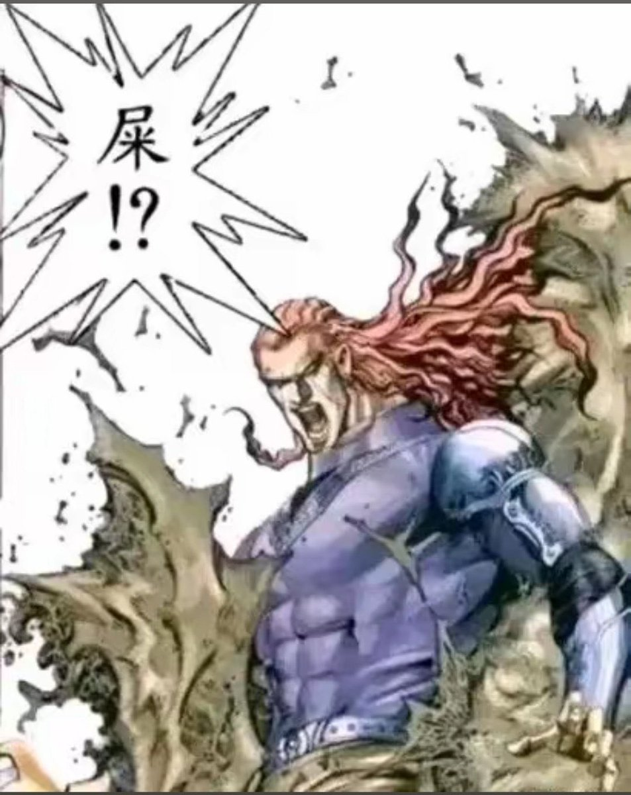
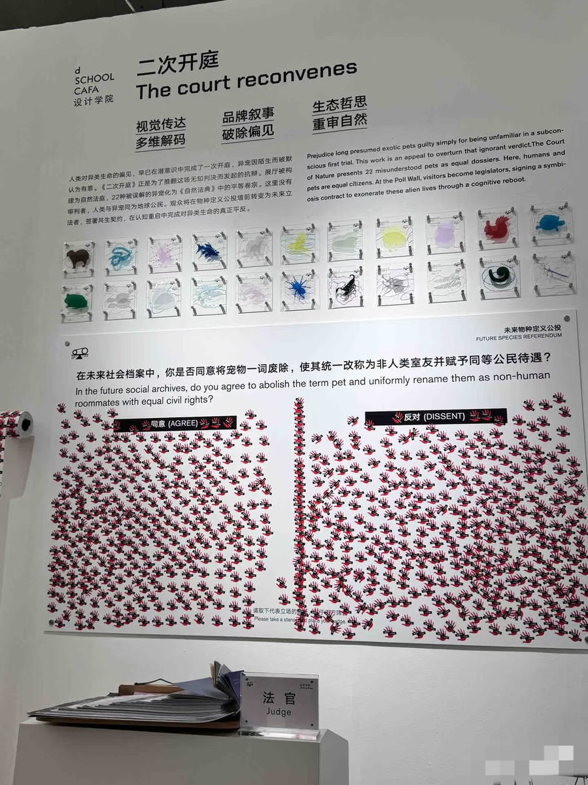
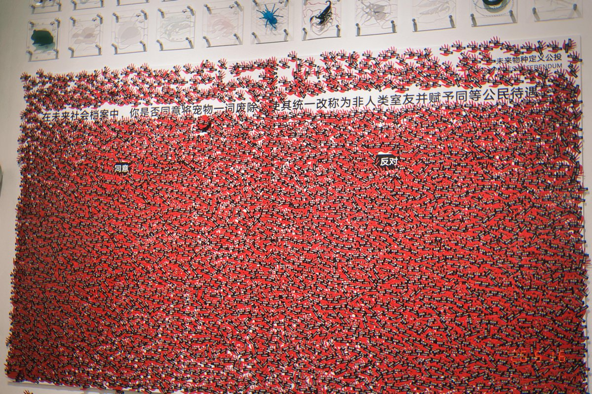

闹麻了，依旧爱猫人士，查理不用有智慧就能成为公民了，到时候本来吃狗肉防止饿死是紧急避险，但你现在吃的是公民，绷不住了，还没把人类当人看，先让动保把动物当公民，依旧反人类这一块，不是，还是没理解宠物凭什么有同等公民待遇，到时候动保就跟免费卫生巾一样得寸进尺，皮豆那些不愿意把宠物说成非人类室友的人，动物为何能有公民权利，流民没有公民身份，宠物比流民高等吗，恐怖伪人分子竟敢伪装成搞艺术的人类，我给你妈打死，你不是人类你有什么资格在这说话，宠物更没有人的情感，人的人性，基础常识等，兽性远大于乖巧一面
仿生人足够历害，记忆，情感，常识，不恐怖谷等等，都可以给部分公民权利，你妈宠物是什么东西
我看这个牢中终于干了一件好事赶紧给这李畜抓起来吧

仿生人足够历害，记忆，情感，常识，不恐怖谷等等，都可以给部分公民权利，你妈宠物是什么东西
我看这个牢中终于干了一件好事赶紧给这李畜抓起来吧



6月16日，央美毕业展上，出现了“公投” 互动艺术装置。
“ 在未来档案中，你是否同意将宠物一词废除，使其统一改称为非人类室友并赋予同等公民待遇？”
几天后，整面墙已经被密密麻麻的红黑色手掌贴纸完全填满，甚至溢出了白墙边缘。
双方观点交锋激烈，最终的视觉效果几乎形成了对半平手的饱和状态。 https://t.co/vIgeXIek8l
“ 在未来档案中，你是否同意将宠物一词废除，使其统一改称为非人类室友并赋予同等公民待遇？”
几天后，整面墙已经被密密麻麻的红黑色手掌贴纸完全填满，甚至溢出了白墙边缘。
双方观点交锋激烈，最终的视觉效果几乎形成了对半平手的饱和状态。 https://t.co/vIgeXIek8l